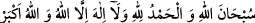

fakirliğe ve tâate sarılmaya sabretmeniz sayesinde nâil oldunuz. Hulâsa, dünyada
yoruldunuz, burada rahata erdiniz. “size selam olsun!” diyerek, yâni Allah Teâlâ sizi
azâbdan ve bütün endişelerinizden kurtardı, diyerek girerler.
Bir hadiste şöyle buyrulur: “Cennetlik bir kulun yetmiş bin hizmetçisi vardır.
Melekler onu severler, selamlarlar ve Allah Teâlâ’nın kendisine hazırladığı şeyleri
haber verirler.”[129]
Mukâtil der ki: “Melekler, Allah tarafından gönderilen hediye ve armağanlarla
cennetliklerin huzuruna dünya günleriyle bir gün ve bir gece kadar üç kez girerler. Bu
selamet ve kurtuluşun devamlı olduğu müjdesiyle onlara “Size selam olsun” derler.”
Haberde gelmiştir ki Hz. Risâlet (a.s.) Bilâl (r.a.)’a “Öyle fakir ol ki Cenâb-ı Hakk’a
ulaşasın, zengin değil.”[130]
Zira o yerde fakirler herkesten daha makbuldür
Enes (r.a.)’dan rivâyet edildiğine göre fakirler, Rasûlullah (s.a.)’e bir elçi
gönderdiler. Elçi:
–“Ey Allah’ın Rasûlü! Ben fakirlerin elçisiyim.” diyerek kendisini tanıttı.
Rasûlullah (s.a.):
–“Merhaba! Demek sen bana çok sevgili olan bir topluluğun yanından geliyorsun.”
buyurdu.
Elçi:
–“Ey Allah’ın Rasûlü! Fakirler: “Zenginler her türlü hayrı alıp gittiler. Onlar
haccediyor, biz edemiyoruz. Onlar sadaka veriyor, biz veremiyoruz. Onlar köle âzâd
ediyor, biz edemiyoruz. Hastalandıklarında mallarının fazlasını kendileri için âhiret
azığı olarak (infâk edip) gönderiyorlar” dediler. Bunun üzerine Peygamber Efendimiz
(a.s.) şöyle buyurdu:
“Benden fakirlere şunu ilet: Onlardan kim Allah rızâsı için sabrederse, bu kişiler
zenginlerde asla bulunmayan üç haslete sâhib olur:
1- Cennette kızıl yakuttan yapılmış odalar vardır. Cennetlikler bu odalara tıpkı
dünyadakilerin yıldızlara baktığı gibi bakarlar. Bu odalara sadece fakir
peygamberler, fakir şehidler ve fakir mü’minler girebilir.
2- Fakirler cennete zenginlerden yarım gün önce gireceklerdir. Bu ise beş yüz
(dünya) senesi eder.
3- Fakir ihlaslı bir şekilde “__WORD__ (Allah’ı tenzih ederim,
hamd Allah’a âiddir, Allah’tan başka hiçbir ilâh yoktur ve Allah en büyüktür)” dese,
aynı sözü bir de zengin söylese, zengin fakirin fazîletine ve ona verilen kat kat sevâba
ulaşamaz. Bu sözü söylemenin yanı sıra, on bin dirhem bağışlamış olsa bile yine ona
ulaşamaz. Ayrıca bütün iyi davranışlar için durum böyledir.”
Bu cevabı alan elçi fakirlerin yanına döndü. Hz. Peygamber (a.s.)’ın sözlerini onlara